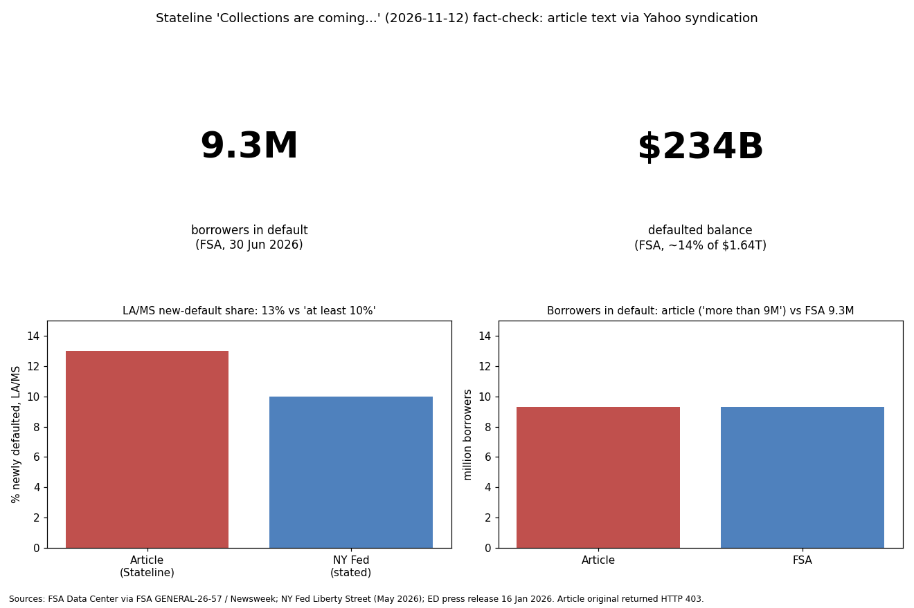

The headline figures (more than 9 million borrowers in default, $234 billion, collections paused in January 2026) match FSA and Education Department sources. The article's claim that 13% of loans entered default in Louisiana and Mississippi is not supported by the NY Fed text I could read, which says "at least 10 percent of borrowers". The grade is provisional because the Stateline page returned HTTP 403 and I worked from a Yahoo syndicated summary, not the full text.
| Claim | Verdict | Source |
|---|---|---|
| More than 9M borrowers in default, $234B | Confirmed (9.3M, $234B at 30 Jun 2026); count from secondary reporting | FSA GENERAL-26-57; Newsweek |
| Collections paused in January | Confirmed (16 Jan 2026; AWG and TOP delayed) | ed.gov press release |
| Defaults restarted late 2025/early 2026 | Confirmed: ~1.0M Q4 2025, 2.6M Q1 2026 | NY Fed Liberty Street |
| LA/MS 13% of loans entered default | Not confirmed; NY Fed text says at least 10% of borrowers (map image not readable) | NY Fed |
| Collections expected next year / after midterms | Consistent with reports; Treasury plans reported for as soon as November | Receivables Info, Forbes (secondary) |